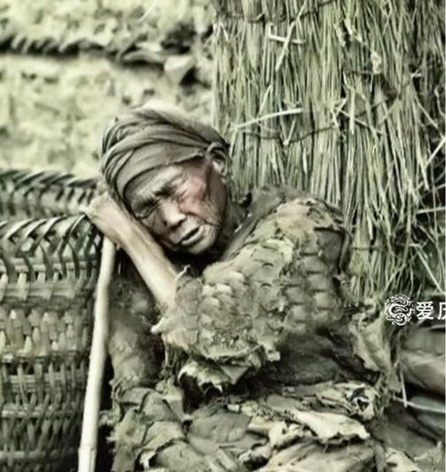
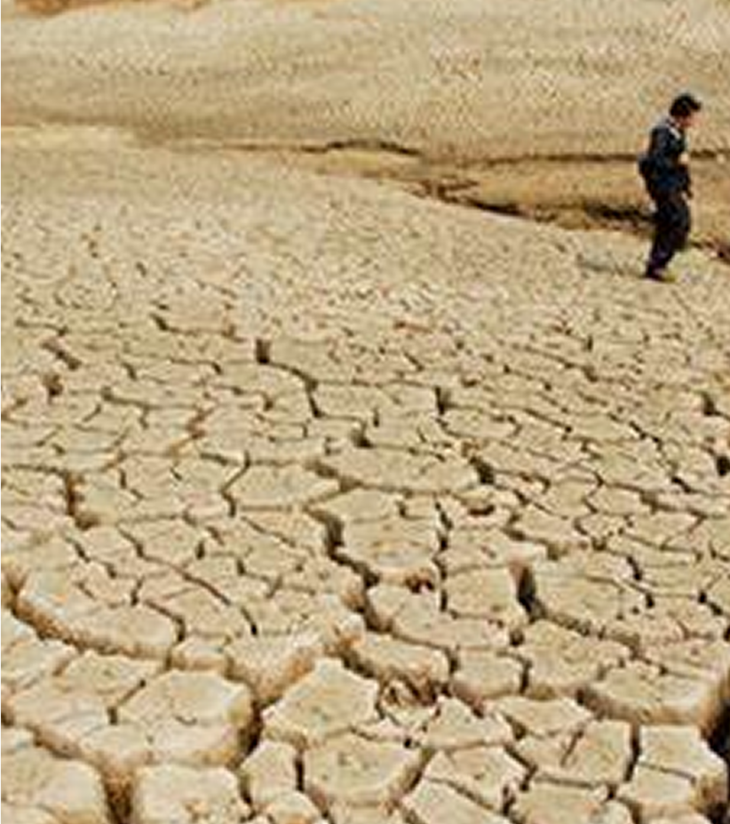
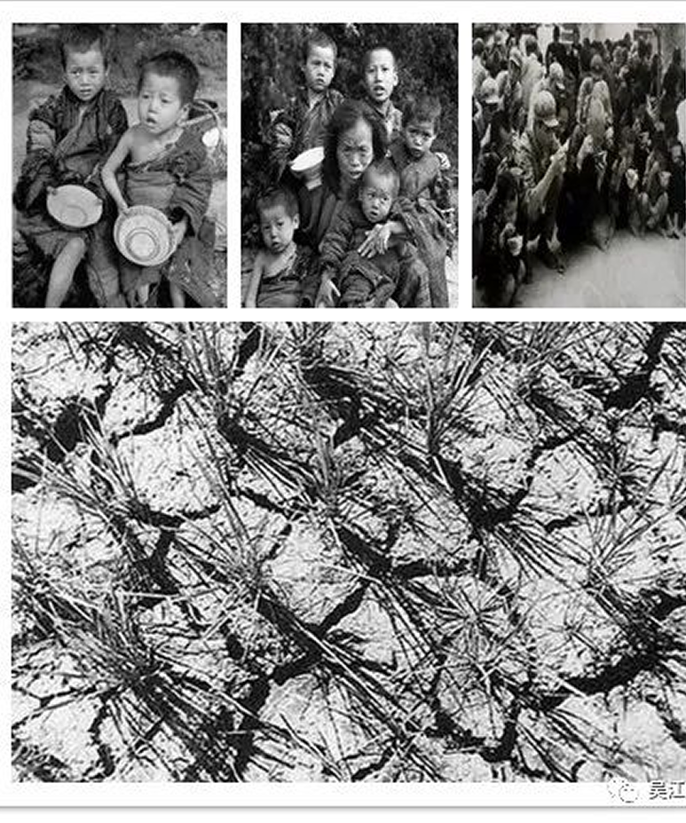

1936年
1937年
号外!
1936年，四川、甘肃等地遭遇严重干旱，降雨稀少，土地龟裂，农作物大面积减产。当地政府救灾不力，加之战乱频繁，交通不便，物资调配困难，导致灾情加剧。
据估计，约500万人受灾，数十万人死亡。大量灾民逃荒，社会秩序混乱，治安恶化。


1959年
1961年
政策失误： 大跃进运动中，虚报产量、人民公社化等政策导致农业生产严重受损。自然灾害： 部分地区遭遇干旱和洪涝，但研究表明自然灾害并非主要原因。制度弊端： 计划经济体制下，粮食调配失衡，地方政府瞒报灾情，导致救援不及时。
据估计，非正常死亡人数在1500万至5500万人之间。全国范围内出现饥荒，社会经济遭受重创。
民不聊生

